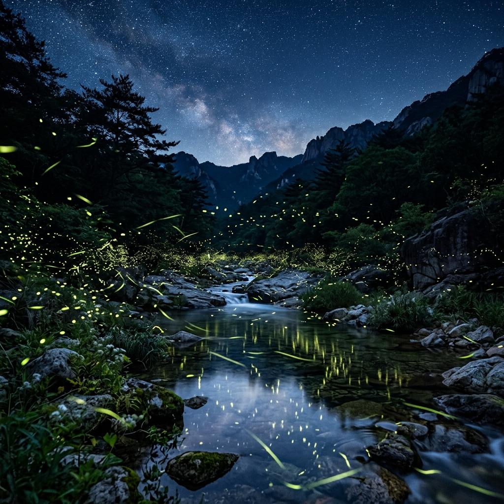
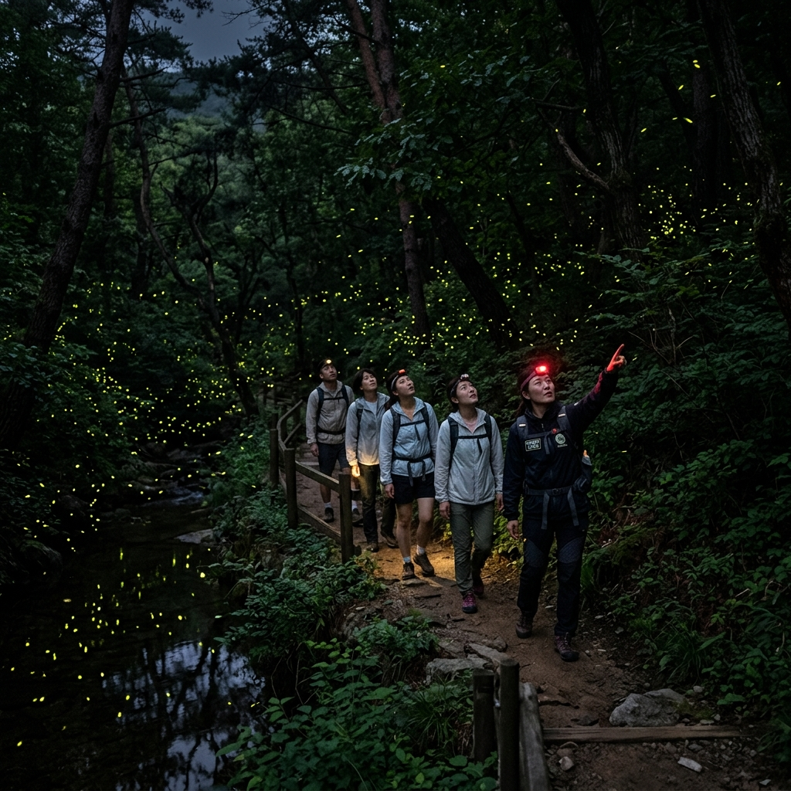

무주 반딧불이 어디서 봐야 잘 보이나, 2026 축제 일정과 드라이브 코스
도심에서 오래 살다 보니 반딧불이를 한 번도 본 적이 없었습니다. 인터넷에서 사진으로 보면서도 '저게 정말 실제로 저렇게 보이나?' 하고 반신반의했습니다. 무주 반딧불이 자연학교 야간 투어를 신청한 날, 산속에서 가이드가 모든 조명을 끄자마자 어둠이 내려앉았습니다. 그리고 잠시 후 — 논처럼 흩어진 빛 점들이 공중에 하나둘 켜지기 시작했습니다. 말을 잃었습니다. 이것이 제가 무주 반딧불이를 꼭 한 번 직접 가서 보라고 권하는 이유입니다.
무주에 왜 반딧불이가 많은가
반딧불이는 깨끗한 환경의 지표 생물입니다. 오염된 물과 토양에서는 살 수 없습니다. 무주는 소백산맥 자락의 금강 최상류 구역에 위치하며, 오래전부터 친환경 농업과 서식지 보호 정책을 시행해 온 덕분에 국내에서 반딧불이를 가장 많이 볼 수 있는 지역으로 알려져 있습니다.무주에서 볼 수 있는 반딧불이는 두 종입니다. 6월 하순~7월에 활동하는 애반딧불이와 8~9월 초에 주로 등장하는 늦반딧불이입니다. 7월 말~8월 초는 두 종이 겹치는 시기로, 반딧불이 관람 밀도가 가장 높습니다.

무주 계곡의 여름밤 — 수백 마리의 반딧불이가 빛을 밝히는 장관 / AI 제작 이미지
2026 무주 반딧불이 관련 행사 일정
매년 7월 말~8월 초에 무주 반딧불이 관련 축제와 체험 행사가 열립니다. 2026년 정확한 일정과 프로그램은 무주군청 공식 홈페이지(muju.go.kr)에서 반드시 확인하세요. 행사 명칭, 날짜, 세부 프로그램은 해마다 조정될 수 있습니다.일반적으로 운영되는 주요 프로그램은 다음과 같습니다.
· 반딧불이 야간 관람 투어: 가이드 동행 야간 서식지 탐방. 사전 예약 필수
· 반딧불이 자연학교: 생태 교육 및 어린이 체험
· 특산물 장터: 천마·머루와인·인삼 등 무주 특산물 판매
· 공연 및 문화 행사: 축제 기간 야외 무대 공연
야간 투어 코스는 인기가 높아 빠르게 마감됩니다. 일정이 확정되면 가능한 빨리 신청하세요.
반딧불이 잘 보이는 장소와 시간
반딧불이 관람의 세 가지 핵심은 시간, 날씨, 장소입니다.시간: 오후 9시~11시 사이가 최적입니다. 완전한 어둠이 찾아와야 반딧불이 빛이 잘 보입니다. 달이 없거나 구름이 가린 밤이 가장 좋은 조건입니다.
날씨: 비가 온 뒤 맑아진 날, 습도가 적당한 밤에 반딧불이 활동이 활발합니다. 강한 바람이 부는 날은 피하세요.
장소:
· 반딧불이 자연학교 일원(설천면 청량리): 가이드 야간 투어 거점
· 남대천 강변: 무주 읍내에서 접근이 쉬운 자연 관람 포인트
· 구천동 계곡 일원: 청정 계곡과 울창한 숲, 반딧불이 서식 밀도 높음
✍️ 직접 가보니
야간 투어 집결 장소가 생각보다 좁아서 인원이 몰리면 관람 각도가 제한됩니다. 강변 쪽보다 계곡 안쪽이 반딧불이 밀도가 훨씬 높았습니다. 모기 방어를 위해 긴팔은 절대 빠뜨리면 안 됩니다. 기피제도 챙겼지만 그래도 모기에 여러 방 물렸습니다. 적색 손전등이 있으면 반딧불이를 방해하지 않으면서도 발 아래를 확인할 수 있어 매우 유용합니다. 투어 전에 미리 구해 두는 것을 강력 추천합니다.
야간 투어 집결 장소가 생각보다 좁아서 인원이 몰리면 관람 각도가 제한됩니다. 강변 쪽보다 계곡 안쪽이 반딧불이 밀도가 훨씬 높았습니다. 모기 방어를 위해 긴팔은 절대 빠뜨리면 안 됩니다. 기피제도 챙겼지만 그래도 모기에 여러 방 물렸습니다. 적색 손전등이 있으면 반딧불이를 방해하지 않으면서도 발 아래를 확인할 수 있어 매우 유용합니다. 투어 전에 미리 구해 두는 것을 강력 추천합니다.
야간 투어 준비물 체크리스트
반딧불이 야간 투어에 나서기 전 반드시 준비해야 할 것들입니다.· 긴팔 상의 + 긴바지 (모기 필수 방어)
· 모기 기피제 (로션 + 스프레이 중복 사용 권장)
· 미끄럼 방지 운동화 (야간 계곡길, 슬리퍼 금물)
· 적색 손전등 또는 적색 헤드랜턴 (백색광 플래시 반딧불이 놀라게 함)
· 보조 배터리
· 음료와 간식 (서식지 내 취식 자제)
· 방수 재킷 (산악 날씨 변화 대비)
스마트폰 플래시 촬영은 반딧불이에게 악영향을 주므로 절대 삼가야 합니다. 야간 장노출 촬영 앱을 활용하거나 기억에만 담아 가는 것이 좋습니다.

무주 반딧불이 야간 투어 — 가이드와 함께 어둠 속에서 반딧불이를 만나는 특별한 경험 / AI 제작 이미지
낮에 즐기는 적상산 드라이브와 머루와인 동굴
반딧불이는 밤에 봐야 하니, 낮 시간 활용이 중요합니다. 무주의 낮 코스 중 가장 추천하는 것이 적상산 드라이브입니다.무주리조트 방향에서 적상산 쪽으로 올라가는 산악 도로를 달리면, 해발 1,000m 이상의 고지에서 무주 분지와 금강 줄기가 내려다보이는 전망 포인트를 만날 수 있습니다. 한여름에도 차창을 열면 서늘한 산 공기가 들어와 에어컨 없이도 시원합니다.
적상호(적상산 저수지)는 드라이브 중간에 들를 수 있는 조용한 수변 풍경지입니다. 이른 아침에는 물안개가 피어오르는 장면이 연출되기도 합니다.
머루와인 동굴은 무주 특산물인 머루로 만든 와인을 저장하고 시음하는 터널형 관광 시설입니다. 동굴 내부 온도가 연중 서늘하게 유지되어 여름에 들어서면 짧은 피서가 됩니다. 무주리조트 인근에 있어 드라이브 코스에 자연스럽게 포함됩니다.
구천동 계곡에서 여름 피서까지
무주 반딧불이 여행에서 구천동 계곡을 빼면 섭섭합니다. 덕유산 향적봉(1,614m)에서 발원한 청정 물줄기가 만들어내는 구천동 33경은 가을 단풍으로 유명하지만, 여름에는 피서 계곡으로 최고입니다.계곡 물이 한여름에도 매우 차갑습니다. 탐방로를 따라 천천히 걸으며 발을 담글 수 있는 구간을 찾아보세요. 덕유산국립공원 내 물놀이 허용 구역은 매년 공고되니, 방문 전 국립공원공단 공식 홈페이지에서 확인하는 것이 필수입니다.
나제통문은 구천동 입구에 위치한 자연 암석 터널로, 신라와 백제의 경계였던 역사적 장소입니다. 탐방 시작점으로 삼기 좋습니다.
구천동 계곡 탐방로는 전반적으로 경사가 완만해 어린이를 동반한 가족도 부담 없이 걸을 수 있습니다.
무주 반딧불이 투어의 솔직한 단점
경험을 솔직하게 나누겠습니다.첫째, 야간 이동이라 체력 소모가 큽니다. 낮에 적상산 드라이브나 구천동 계곡을 보고 저녁 반딧불이 투어까지 하면 하루가 꽤 빡빡합니다. 체력 배분을 잘 해야 합니다.
둘째, 기상 취소 위험이 있습니다. 비가 오거나 강한 바람이 부는 날에는 야간 투어가 취소되거나 반딧불이 활동이 현저히 줄어듭니다. 날씨에 따라 관람 조건이 크게 달라지기 때문에 일정에 여유를 두는 것이 좋습니다.
셋째, 모기가 많습니다. 계곡 인근 야간 탐방이라 모기 대비를 철저히 해야 합니다. 방심하면 다음 날 온몸이 빨갛게 됩니다.
넷째, 반딧불이를 보장할 수 없습니다. 자연 생물인 만큼 날씨와 시기에 따라 개체수 차이가 크게 납니다. 기대치를 조금 낮추고 가는 것이 좋습니다. 정말 운이 좋으면 군집이 장관을 이루고, 그렇지 않으면 몇 마리만 볼 수도 있습니다.

적상산 드라이브 코스 — 울창한 숲 사이를 오르며 만나는 무주 계곡 전망 / AI 제작 이미지
무주 교통·숙박·먹거리 정리
교통: 서울에서 자가용으로 약 2시간 30분~3시간. 대전에서 40분, 전주에서 1시간. 통영-대전고속도로 무주IC 이용. 대중교통은 서울 센트럴시티 또는 동서울터미널에서 무주행 직행 버스 이용.숙박: 무주리조트(반딧불이 행사 기간 연계 패키지 있음), 구천동·설천면 인근 펜션·민박, 캠핑장. 성수기 주말에는 숙박도 미리 예약해야 합니다.
먹거리: 무주 대표 특산물은 천마(천마막걸리, 천마차)와 머루(머루와인, 머루즙). 구천동 계곡 인근 식당에서는 산채 정식, 민물 매운탕을 즐길 수 있습니다. 투어 후 무주 읍내 포장마차에서 야식으로 마무리하는 것도 여행의 낙입니다.
📝 작성자 메모
2026년 무주 반딧불이 관련 행사 일정은 무주군청 공식 홈페이지(muju.go.kr)에서 확인하세요. 이 글에 담긴 프로그램 내용은 과거 개최 사례를 참고한 것으로, 실제 2026년 행사 구성과 다를 수 있습니다. 정보 기준일: 2026-07-08. 날씨·기상 상황에 따라 반딧불이 관람 조건이 크게 달라질 수 있으며, 야간 투어 취소 또는 변경이 있을 수 있습니다.
2026년 무주 반딧불이 관련 행사 일정은 무주군청 공식 홈페이지(muju.go.kr)에서 확인하세요. 이 글에 담긴 프로그램 내용은 과거 개최 사례를 참고한 것으로, 실제 2026년 행사 구성과 다를 수 있습니다. 정보 기준일: 2026-07-08. 날씨·기상 상황에 따라 반딧불이 관람 조건이 크게 달라질 수 있으며, 야간 투어 취소 또는 변경이 있을 수 있습니다.
#무주반딧불이
#반딧불이축제
#무주여행
#여름야간
#반딧불이관람
#적상산
#구천동계곡
#전북여행
#무주리조트
#여름축제